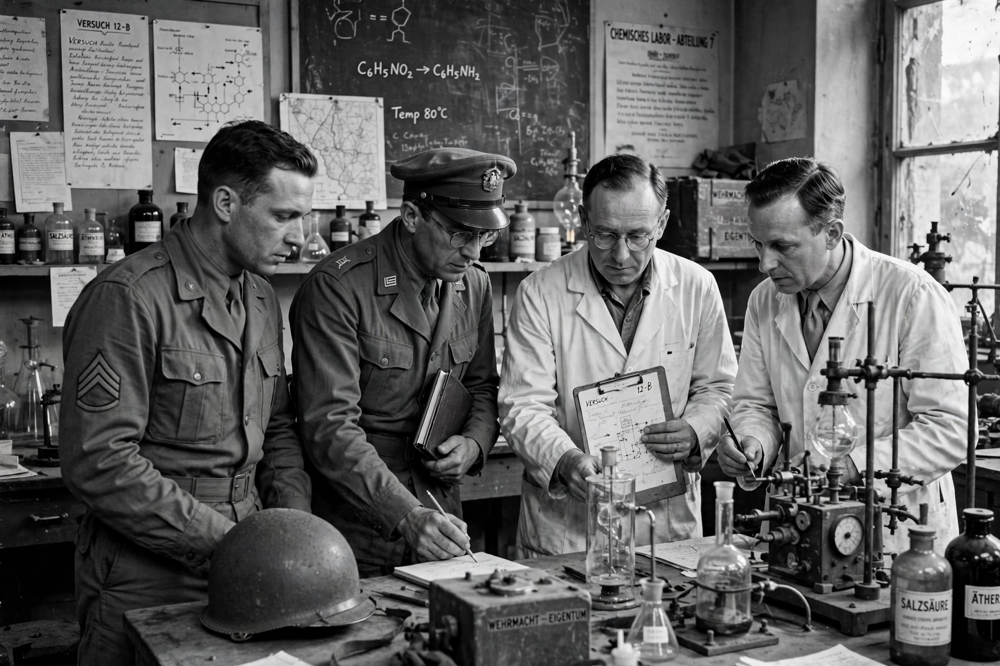

Operation Alsos
| Alsos Mission | |
| Type | Military scientific-intelligence mission |
|---|---|
| Active | 1943–1945 |
| Country | United States (with British participation) |
| Commander | Col. Boris Pash |
| Scientific chief | Samuel Goudsmit |
| Objective | Determine the progress of the German nuclear weapons programme |

The Alsos Mission was an Allied unit created in 1943 during World War II to investigate the German nuclear energy project — code-named under the Manhattan Project — and to determine whether Nazi Germany was developing an atomic bomb. The name Alsos is Greek for "grove", a play on the surname of General Leslie R. Groves, head of the Manhattan Project.
Operations
Led militarily by Colonel Boris Pash, with Dutch-American physicist Samuel Goudsmit as scientific leader, Alsos teams followed Allied armies into Italy in 1943–44 and into France and Germany in 1944–45. In Strasbourg in November 1944 they seized documents showing the German programme was years behind the Allied effort and centred on a small research group under Werner Heisenberg.
Haigerloch and the round-up of scientists
In April 1945 Alsos forces captured the German experimental reactor at Haigerloch and tonnes of uranium ore, much of it hidden at Stadtilm and elsewhere. The ten most important German nuclear scientists — including Heisenberg, Otto Hahn, Max von Laue and Carl Friedrich von Weizsäcker — were detained and interned at Farm Hall in England, where their conversations were secretly recorded (later published as the Farm Hall transcripts).
Outcome
Alsos concluded that Germany had neither an operational reactor nor any realistic prospect of producing a bomb during the war. The mission also gathered intelligence on other German research, and its work informed parallel Western efforts such as Operation Epsilon and the Soviet capture of scientists and materials.